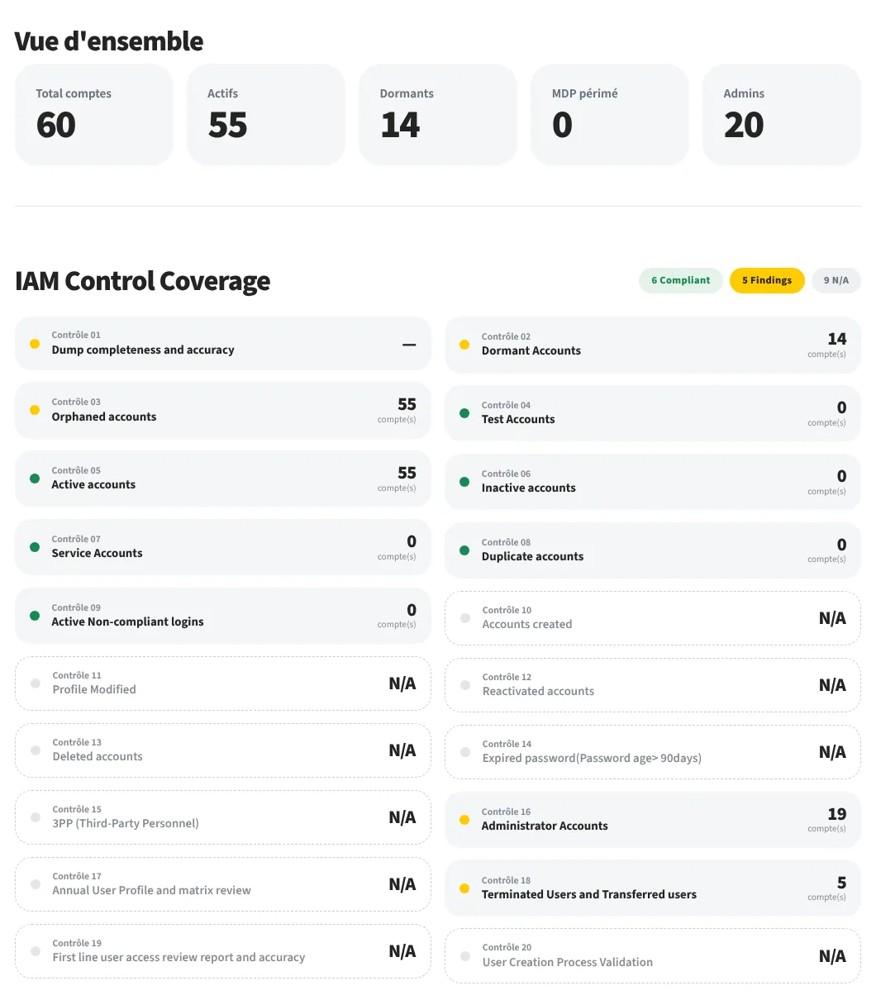

Cybersecurity & network engineer
Understand the need.Build, deliverand convince.
At MTN Côte d'Ivoire, I cut an access review from 2 hours to 3 minutes. I'm Dylan Gbenou, a cybersecurity and network engineer, and I see my projects through from A to Z.
Open to a permanent role · Systems, Networks, Cloud & Cybersecurity
ApproachI don't just use systems. I try to understand how they work, where they can fail and how to make them better.
- EducationEIGSI engineer, networks & IS
- Latest internshipIAM at MTN Côte d'Ivoire
- Before thatInfrastructure at Ecobank, La Défense
- Based inCergy, Paris region
§ 01 · Flagship project
Automating access reviews.
At MTN Côte d'Ivoire, an operator with more than 17 million subscribers, checking that each employee only has access to the tools they need was done entirely by hand. I designed the application that replaces that work.
Think you can beat the tool?24 accounts, a timer, your calls. Then compare with the automated analysis.
Take the challenge · 2 min
A project, from A to Z.
The four steps I lead myself, from the first question to the decision. Each one points to the work that proves it.
- 01
Understand.
At MTN, before automating anything, I took the exports apart one by one, down to an LDAP date format no parser recognised.
Proof · P-01 Access review - 02
Build.
A tool that reads eleven export formats and ranks every account from 0 to 100, checked by more than 550 automated tests.
Proof · P-01 · P-02 - 03
Deliver.
An unexpected data quality issue arose along the way. I reorganised priorities and delivered on time, reports included.
Proof · MTN internship - 04
Convince.
At Ecobank, I studied Centreon and presented it to management. At EIGSI, 3rd in my class at the Business Game.
Proof · Journey
Vulnerability prioritisation
Combines severity, likelihood of exploitation and business criticality to sort the flaws that really matter.
Cybersecurity30 vulnerabilities rankedP-03Three-tier network model
A hierarchical enterprise network modelled in Cisco Packet Tracer, with dual-homing throughout.
Networks9 access switchesP-04Multi-cloud lab with Terraform
An AWS network described in code, with a planned VPN to Azure. Deployed, observed, then destroyed.
Cloud · IaC15 AWS resources in codeP-05BudgetTracker Web
A React and Supabase dashboard, with magic-link sign-in and data isolated at database level.
DevelopmentLiveP-06BudgetTracker for iOS
A budgeting app in CFA francs for Mobile Money, audited against OWASP Mobile and then fixed.
Development · Mobile security3 of 4 flaws fixedP-07Reving: from 3D scan to CAD file
An AI proof of concept that turns a 3D scan into a computer-aided design file.
AI · DevelopmentPython · PyTorchNext step
Good systems are built together. Let's talk about the next one.
I am looking for my first permanent role in the Paris region, in systems, networks, cloud, cybersecurity or IAM. Available from November 2026.
gbenoudylan@gmail.com- Contract
- Permanent (CDI)
- Location
- Paris region, based in Cergy
- Availability
- From November 2026
- Degree
- EIGSI engineering degree, March 2027. Certificate of completion available now.